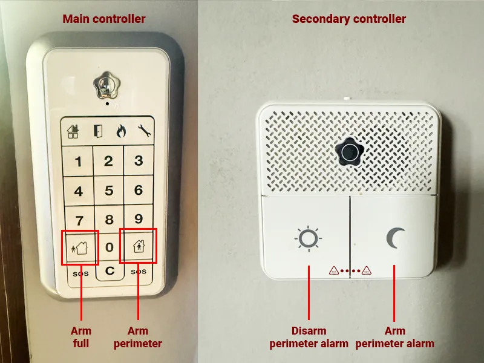
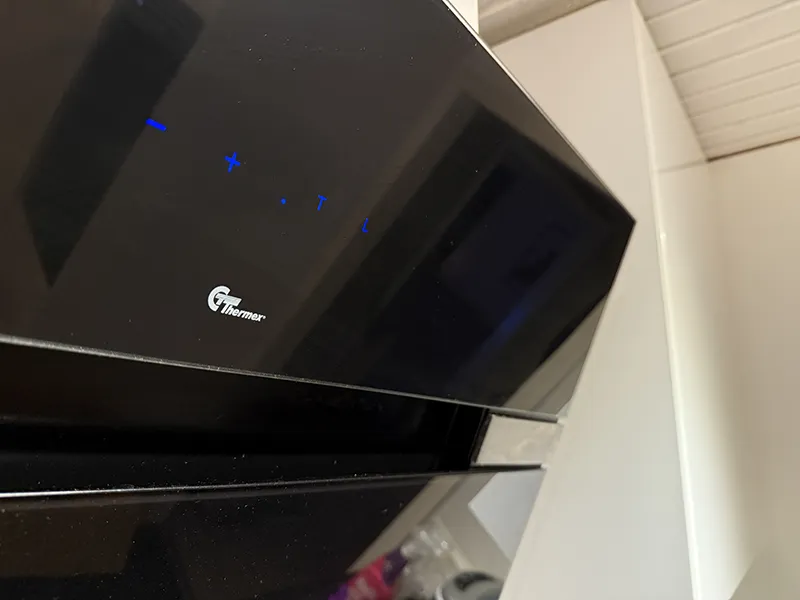

Wi-Fi
Setup
There's a router on the wall in the living room, near the terrarium. This router is bridged to our own (Netgear Orbi) router which is standing in the window next to the wall router, which provides a mesh network. Then we have a satellite in the master bedroom that strengthens the internet signal.
Troubleshooting
Always start by checking your devices; sometimes simply turning off and on the wifi on your computer, phone, or whatever devices you have is enough.
Check the wall router, the four lights from top shoud be lighted green. Check the Netgear router, no light should be illuminated. If this is correct it seems to be ok, but you can try to restart anyway.
Restart home network and Internet
- Unplug the black cable from the bridged router on the wall for about 5 seconds and then plug it back in. Internet and TV channels will disappear while it restarts.
- Important! Wait approximately 3 minutes until it has started up. The top four lights should be glowing green.
- Now, unplug the cables for the Netgear network, router and satellite (They probably have a purple light by now).
- Plug in the cable for the router, and wait until you see that you have wifi on your device, it can take a few minutes.
- When you have wifi from Netgear Router - Plug in the cable for the satellite and let it start up.
Now you hopefully have a fully working wifi.
Home alarm and cameras
Kulladal is a safe area, burglaries rarely occur here, especially in alarmed houses. But we value security, so the house is equipped with a Verisure alarm, mainly since it has fire alarm and is connected to alarm center which gives fast assistance if needed.
The home alarm includes cameras on the indoor room sensors, in addition to detecting motion when the house is fully armed, they assist the alarm center in the event of a burglary or fire. They can locate fire, smoke development, or any intruders and quickly alert the police, fire brigade, or whatever is required.
It is not our choice to have cameras, it is in Verisures alarm setup by default when we wanted indoor sensors. We can only view through the cameras through our Verisure app when the house is fully armed - i.e., when no one is in the house.
Airbnb's Camera Policy
As Airbnb does not allow cameras of any kind, the cameras are taped when you arrive. And we leave it up to you whether you want it that way or not. If you want the extra safety they provide in an event of a fire or burglary, you remove the pieces of tape from the cameras.
The indoor sensors are located near the inner roof, in the following three places:
- Living room, on the wall/corner by the bookshelf.
- At the end of the hallway, above the utility closet.
- In the basement, to the left corner below the stairs.
Window Sensors
In addition to the indoor sensors, we have several windows with sensors, these respond to whether a window is broken or vibrations.
Control panels: Arming and Disarming
The main control panel is located at the entrance door. You also got a second control panel on the wall in the master bedroom, where you can only set the perimeter protection och turn off perimeter protection.
Arming Perimeter
Press the panel's perimeter button, enter your alarm code. Done. With perimeter protection, only the window sensors are activated. Or use the panel in Master Bedroom.
Arming Full Protection
Press the panel's full protection button, enter your alarm code. Done. With full protection, all sensors are activated, and the cameras if you chose to remove the tape.
Disarming
Simply enter the code on the panel. When you come home, open the door, enter your alarm code (You have 30 seconds)
If the alarm is triggered
By misstake
Disalarm with alarm code on the panel
In the event of fire or burglary
The alarm central will speak to you through a speaker in the house, they will hear and they will see if the cameras is untaped. They will help you in the situation and send police, ambulance or fire brigade if needed.
Sonos sound system
In our house, we have several Sonos speakers. By the TV, there's a soundbar, and a subwoofer stands behind the sofa.
We also have two Sonos Play 1 speakers. One is in the basement, and one is in the Master Bedroom.
As soon as you log into our Wifi, you can see these speakers via Spotify. You can start playing music and stream it to these speakers.
When the TV is turned on, the TV's audio automatically switches to the soundbar and subwoofer.
TV
Living Room TV
Regular Swedish digital channels are available with the TV remote. They're accessed through the [TV] input. Additionally, there's an Apple TV accessible via [HDMI 1] with apps like Netflix, HBO Max, Disney+, and more. You do also have a Nintendo Switch connected.
Master Bedroom TV
This TV has an Apple TV with apps including Netflix, HBO Max, Disney+, and more.
Basement TV
This TV lacks a remote control. Turn it on from the side. It has an Apple TV, though not the latest model, so the app selection is limited.
Our animals
Bunnies
At the back of our house, we have a large cage. In it, we have rabbits. They need food once a day. For safety reasons, the cage will be locked. Once a day, someone will come and feed them as they need daily feeding.
Ball Python
Indoors, we have our ball python named Elsa. She is the gentlest snake in the world and completely non-venomous. She is used to people, has never been aggressive or attempted to bite. When we are home, we take her out relatively often. But for safety reasons, the terrarium will be locked during your stay. She doesn't require any food or similar during your stay. At night she usually stays in her cave, but in day time she is usually visible in the terrarium. I hope you like to watch her.
Dishwasher
- Open the dishwasher front.
- Underneath the sink, you'll find dishwasher tablets. Take one and place it in the compartment in the dishwasher door.
- Press the power-on button. Leave the machine on the ECO mode.
- Press the "Start" button.
- Close the dishwasher front.
- If the machine is running, a blue light will appear on the floor under the dishwasher front.
Kitchen fan
The kitchen fan has touch buttons. You can turn on the light and adjust the speed on the glass. The buttons are not visible until you have started it. Push with your finger (Where the "+" sign is on the fan) and it will light up when you push the right place. Sometimes it does not react on the first push.
Toilet seat
Do not use the toilet lid as a seat.
Locking the Balcony Door
This requires a separate paragraph, as it's a bit tricky to lock. When you open the door and need to close and lock it, follow these steps:
- Press down the handle and close the door, not too forcefully, but firmly.
- Lift the handle upward as far as it goes.
- Start turning the key.
- Here it can be tricky; the key usually stops here from turning.
- While keeping pressure on the key, push the handle down to the bottom again, and then pull it back up to the top. Here it usually succeeds.
- If this doesn't work the first time, open the door and start over.
Electricity, Fuses, and Residual Current Device (RCD)
Fuse Box (10 Ampere)
Located in the basement on the wall to the right of the door to the bathroom. Spare fuses are stored here.
Main Fuse Box (16 Ampere)
Located in an outdoor cabinet. It is to the right of the garage door in the upper cabinet. Spare fuses are stored in the cabinet.
Residual Current Device (RCD)
Placed next to the fuse box in the basement, located to the right of the door leading to the bathroom.
Troubleshooting
Troubleshooting Pen
A troubleshooting pen is located near the fuse box inside the house. Use it by holding it against the fuses in the fuse boxes. If it lights up red, the fuse is working; if not, the fuse is broken.
Issue: All power is out in the entire house
This is likely due to the residual current device (RCD). Check if it has tripped—if it has, the lever will point downwards. Push it upwards to restore power. If the power went out when you plugged in a specific device, it is likely faulty. Do not use that device.
Issue: The oven or another appliance is partially working, or lights are on but dim
This is likely due to a blown main fuse. Go to the outdoor fuse box to the right of the garage door and check the fuses.
Issue: Part of the house has lost power totally, such as a few rooms
This is likely due to a blown 10-ampere fuse. Go down to the basement and check the fuses.
Toilet seat
Do not use the toilet lid as a seat.
Locking the Balcony Door
This requires a separate paragraph, as it's a bit tricky to lock. When you open the door and need to close and lock it, follow these steps:
- Press down the handle and close the door, not too forcefully, but firmly.
- Lift the handle upward as far as it goes.
- Start turning the key.
- Here it can be tricky; the key usually stops here from turning.
- While keeping pressure on the key, push the handle down to the bottom again, and then pull it back up to the top. Here it usually succeeds.
- If this doesn't work the first time, open the door and start over.